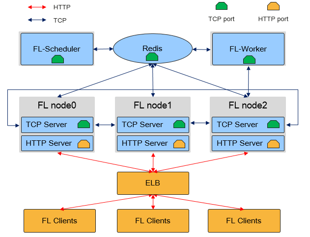

Horizontal Federated Cloud-based Deployment

The following uses LeNet as an example to describe how to use MindSpore Federated to deploy a horizontal federated learning cluster.
The following figure shows the physical architecture of the MindSpore Federated Learning (FL) Server cluster:

As shown in the preceding figure, in the horizontal federated learning cloud cluster, there are three MindSpore process roles: Federated Learning Scheduler, Federated Learning Server and Federated Learning Worker:
Federated Learning Scheduler
Schedulerprovides the following functions:Cluster networking assistance: During cluster initialization, the
Schedulercollects server information and ensures cluster consistency.Open management plane: You can manage clusters through the
RESTfulAPIs.
In a federated learning task, there is only one
Scheduler, which communicates with theServerusing the TCP proprietary protocol.Federated Learning Server
Serverexecutes federated learning tasks, receives and parses data from devices, and provides capabilities such as secure aggregation, time-limited communication, and model storage. In a federated learning task, users can configure multipleServerswhich communicate with each other through the TCP proprietary protocol and open HTTP ports for device-side connection.In the MindSpore federated learning framework,
Serveralso supports auto scaling and disaster recovery, and can dynamically schedule hardware resources without interrupting training tasks.Federated Learning Worker
Workeris an accessory module for executing the federated learning task, which is used for supervised retraining of the model in the Server, and then the trained model is distributed to the Server. In a federated learning task, there can be more than one (user configurable) ofWorker, and the communication betweenWorkerandServeris performed via TCP protocol.
Scheduler and Server must be deployed on a server or container with a single NIC and in the same network segment. MindSpore automatically obtains the first available IP address as the Server IP address.
The servers will verify the timestamp carried by the clients. It is necessary to eunsure the servers are periodically time synchronized to avoid a large time offset.
Preparations
Recommend to create a virtual environment for the following operations with Anaconda.
Installing MindSpore
The MindSpore horizontal federated learning cloud cluster supports deployment on x86 CPU and GPU CUDA hardware platforms. Run commands provided by the MindSpore Installation Guide to install the latest MindSpore.
Installing MindSpore Federated
Compile and install with source code.
git clone https://gitee.com/mindspore/federated.git -b master
cd federated
bash build.sh
For bash build.sh, compilation can be accelerated by the -jn option, e.g. -j16. The third-party dependencies can be downloaded from gitee instead of github by the -S on option.
After compilation, find the whl installation package of Federated in the build/package/ directory to install:
pip install mindspore_federated-{version}-{python_version}-linux_{arch}.whl
Verifying Installation
Execute the following command to verify the installation result. The installation is successful if no error is reported when importing Python modules.
from mindspore_federated import FLServerJob
Installing and Starting Redis Server
Federated Learning relies on Redis Server as the cached data middleware by default. To run the Federated Learning service, a Redis server needs to be installed and run.
User must check the security of the Redis to be used. Some versions may have security vulnerabilities.
Install Redis server:
sudo apt-get install redis
Run the Redis server and the number of configuration side is 23456:
redis-server --port 23456 --save ""
Starting a Cluster
-
cd example/cross_device_lenet_femnist
Modify the yaml configuration file according to the actual running:
default_yaml_config.yaml. sample configuration of Lenet is as follows:fl_name: Lenet fl_iteration_num: 25 server_mode: FEDERATED_LEARNING enable_ssl: False distributed_cache: type: redis address: 127.0.0.1:23456 # ip:port of redis actual machine plugin_lib_path: "" round: start_fl_job_threshold: 2 start_fl_job_time_window: 30000 update_model_ratio: 1.0 update_model_time_window: 30000 global_iteration_time_window: 60000 summary: metrics_file: "metrics.json" failure_event_file: "event.txt" continuous_failure_times: 10 data_rate_dir: ".." participation_time_level: "5,15" unsupervised: cluster_client_num: 1000 eval_type: SILHOUETTE_SCORE encrypt: encrypt_train_type: NOT_ENCRYPT pw_encrypt: share_secrets_ratio: 1.0 cipher_time_window: 3000 reconstruct_secrets_threshold: 1 dp_encrypt: dp_eps: 50.0 dp_delta: 0.01 dp_norm_clip: 1.0 signds: sign_k: 0.01 sign_eps: 100 sign_thr_ratio: 0.6 sign_global_lr: 0.1 sign_dim_out: 0 compression: upload_compress_type: NO_COMPRESS upload_sparse_rate: 0.4 download_compress_type: NO_COMPRESS ssl: # when ssl_config is set # for tcp/http server server_cert_path: "server.p12" # for tcp client client_cert_path: "client.p12" # common ca_cert_path: "ca.crt" crl_path: "" cipher_list: "ECDHE-RSA-AES128-GCM-SHA256:ECDHE-ECDSA-AES128-GCM-SHA256:ECDHE-RSA-AES256-GCM-SHA384:ECDHE-ECDSA-AES256-GCM-SHA384:ECDHE-RSA-CHACHA20-POLY1305:ECDHE-PSK-CHACHA20-POLY1305:ECDHE-ECDSA-AES128-CCM:ECDHE-ECDSA-AES256-CCM:ECDHE-ECDSA-CHACHA20-POLY1305" cert_expire_warning_time_in_day: 90 client_verify: pki_verify: false root_first_ca_path: "" root_second_ca_path: "" equip_crl_path: "" replay_attack_time_diff: 600000 client: http_url_prefix: "" client_epoch_num: 20 client_batch_size: 32 client_learning_rate: 0.01 connection_num: 10000
Prepare the model file and start it in the following way: weight-based start. You need to provide the corresponding model weights.
Obtain lenet model weight:
wget https://ms-release.obs.cn-north-4.myhuaweicloud.com/ms-dependencies/Lenet.ckptRun Scheduler, and the management side address is
127.0.0.1:11202by default.python run_sched.py \ --yaml_config="yamls/lenet.yaml" \ --scheduler_manage_address="10.*.*.*:18019"
Run Server, and start one Server and the HTTP server address is
127.0.0.1:6666by default.python run_server.py \ --yaml_config="yamls/lenet.yaml" \ --tcp_server_ip="10.*.*.*" \ --checkpoint_dir="fl_ckpt" \ --local_server_num=1 \ --http_server_address="10.*.*.*:8019"
Stop federated learning. The current version of the federated learning cluster is a resident process, and the
finish_cloud.pyscript can be executed to terminate the federated learning service. The example of executing the command is as follows, whereredis_portis passed with the same parameters as when starting redis, representing stopping the cluster corresponding to thisScheduler.python finish_cloud.py --redis_port=23456
If console prints the following contents:
killed $PID1 killed $PID2 killed $PID3 killed $PID4 killed $PID5 killed $PID6 killed $PID7 killed $PID8
it indicates the termination service is successful.
Auto Scaling
MindSpore federal learning framework supports Server auto scaling and provides RESTful services externally through the Scheduler management port, enabling users to dynamically schedule hardware resources without interrupting training tasks.
The following example describes how to control scale-out and scale-in of cluster through APIs.
Scale-out
After the cluster starts, enter the machine where the scheduler node is deployed and make a request to the Scheduler to query the status and node information. A RESTful request can be constructed with the curl command.
curl -k 'http://10.*.*.*:18015/state'
Scheduler will return query results in json format.
{
"message":"Get cluster state successful.",
"cluster_state":"CLUSTER_READY",
"code":0,
"nodes":[
{"node_id","{ip}:{port}::{timestamp}::{random}",
"tcp_address":"{ip}:{port}",
"role":"SERVER"}
]
}
You need to pull up 3 new Server processes and accumulate the local_server_num parameter to the number of scale-out, so as to ensure the correctness of the global networking information, i.e. after scale-out, the number of local_server_num should be 4. An example of executing the command is as follows:
python run_server.py --yaml_config="yamls/lenet.yaml" --tcp_server_ip="10.*.*.*" --checkpoint_dir="fl_ckpt" --local_server_num=4 --http_server_address="10.*.*.*:18015"
This command indicates starting four Server nodes and the total number of Server is 4.
Scale-in
Simulate the scale-in directly via kill -9 pid, construct a RESTful request with the curl command, and query the status, which finds that there is one node_id missing from the cluster to achieve the purpose of scale-in.
curl -k \
'http://10.*.*.*:18015/state'
Scheduler returns the query results in json format.
{
"message":"Get cluster state successful.",
"cluster_state":"CLUSTER_READY",
"code":0,
"nodes":[
{"node_id","{ip}:{port}::{timestamp}::{random}",
"tcp_address":"{ip}:{port}",
"role":"SERVER"},
{"node_id","worker_fl_{timestamp}::{random}",
"tcp_address":"",
"role":"WORKER"}，
{"node_id","worker_fl_{timestamp}::{random}",
"tcp_address":"",
"role":"WORKER"}
]
}
After scale-out/scale-in of the cluster is successful, the training tasks are automatically resumed without additional intervention.
Security
MindSpore Federal Learning Framework supports SSL security authentication of Server. To enable security authentication, you need to add enable_ssl=True to the startup command, and the config.json configuration file specified by config_file_path needs to add the following fields:
{
"server_cert_path": "server.p12",
"crl_path": "",
"client_cert_path": "client.p12",
"ca_cert_path": "ca.crt",
"cert_expire_warning_time_in_day": 90,
"cipher_list": "ECDHE-RSA-AES128-GCM-SHA256:ECDHE-ECDSA-AES128-GCM-SHA256:ECDHE-RSA-AES256-GCM-SHA384:ECDHE-ECDSA-AES256-GCM-SHA384:DHE-RSA-AES128-GCM-SHA256:DHE-DSS-AES128-GCM-SHA256:kEDH+AESGCM:ECDHE-RSA-AES128-SHA256:ECDHE-ECDSA-AES128-SHA256:ECDHE-RSA-AES128-SHA:ECDHE-ECDSA-AES128-SHA:ECDHE-RSA-AES256-SHA384:ECDHE-ECDSA-AES256-SHA384:ECDHE-RSA-AES256-SHA:ECDHE-ECDSA-AES256-SHA:DHE-RSA-AES128-SHA256:DHE-RSA-AES128-SHA:DHE-DSS-AES128-SHA256:DHE-RSA-AES256-SHA256:DHE-DSS-AES256-SHA:DHE-RSA-AES256-SHA:!aNULL:!eNULL:!EXPORT:!DES:!RC4:!3DES:!MD5:!PSK",
"connection_num":10000
}
server_cert_path: The path to the p12 file containing the ciphertext of the certificate and key on the server-side.
crl_path: Files of revocation list.
client_cert_path: The path to the p12 file containing the ciphertext of the certificate and key on the client-side.
ca_cert_path: Root certificate.
cipher_list: Cipher suite.
cert_expire_warning_time_in_day: Alarm time of certificate expiration.
The key in the p12 file is stored in cipher text. You need to pass in the password when starting. Please refer to the client_password and server_password fields in the Python API mindspore.set_fl_context for the specific parameters.